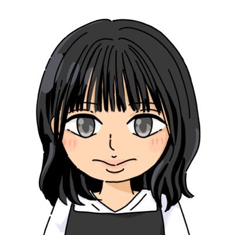

雑談・悩み・不安など、ゆっくりお聴きします🍀

こんにちは、悪夢ちゃんです。
現在、傾聴やカウンセリングについて独学で学びながら、 お話をお聴きする活動をしています。
私自身も心の不調や生きづらさに向き合ってきた経験があり、 「誰かに話を聴いてもらえる場所の大切さ」を感じてきました。
その経験から、悩みや不安、雑談などを安心して話せる場所を作りたいと思っています。
専門のカウンセラーではありませんが、 否定せず、急かさず、あなたのペースを大切にお話をお聴きします。
うまく話せなくても大丈夫です。お気軽にご相談ください🍀
専門的なカウンセリングではなく、 お話をお聴きする傾聴サービスです。
9:00〜24:00
時間外はご相談ください。